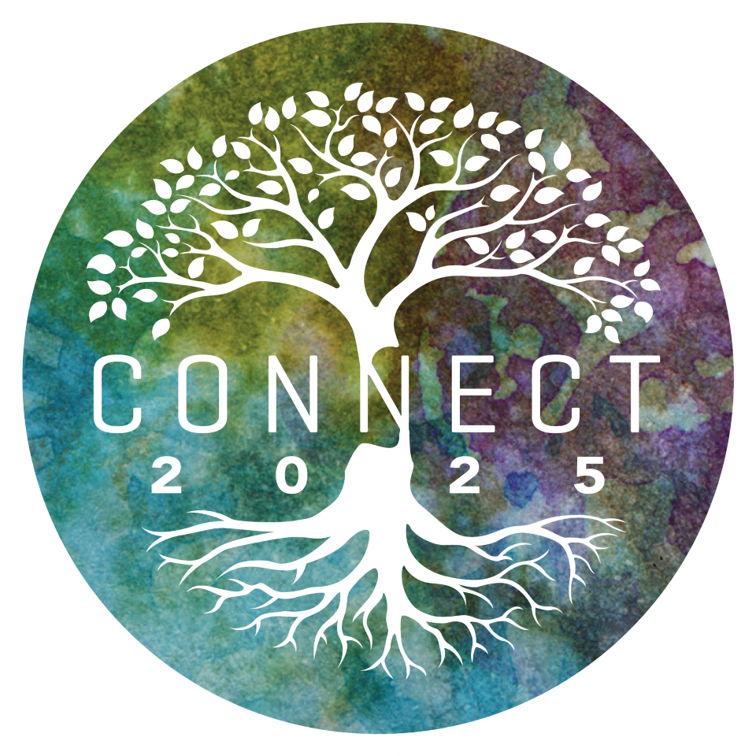

Bienvenido a
Connect 2025
A nuestro plan estratégico para los próximos 5 años le hemos denominado CONNECT (conectar en español), y como la propia palabra lo implica significa conectar nuestro trabajo diario con nuestra misión y con el llamado a servir a los demás.
Ver video